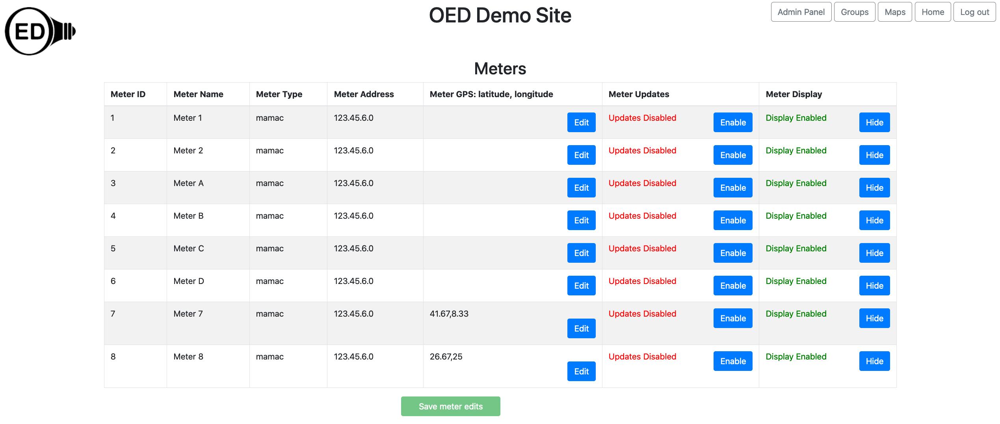

Admin Map Viewing (Help)
Overview
If you are logged in as an admin and visit the "Meters" page then you will see more columns than the typical user
as shown in the next figure. Each column is described below. It is important that you click the "Save
meter edits" button at the bottom
of the page to save your changes to the
database. If you do not do this, other users will not see the change and it will be gone the next time you
visit your site or refresh your web browser page with OED.

Usage
Each column has the following meaning/usage:
- Meter ID: This is the internal id used for this meter in the database. It is not usually of interest but
given in case there is an issue and we need the information to help track it down.
- Meter Name: Same as for any user and described on the meter viewing page.
- Meter Type: This is the type of meter as stored in OED. This information might be useful if you are looking
for a particular type of meter or to be sure it is the correct type.
- Meter Address: This is the IP address to get data if the meter type is MAMAC. It is the address that Obvius
data came from if the meter type is Obvius.
- Meter GPS: This is the latitude and longitude used when placing this meter on a map. You can edit the value
here. See the admin map help for more information on maps.
- Meter Updates. This tells if OED tries to automatically gather this meter's data (assuming the site was
properly set up the do meter updates). At the current time, OED only does this for MAMAC meters. (Obvius
pushes the data to OED so OED does not need to start that process.) If you have a MAAMC meter in your site
that you no longer want to collect data, then click the "Disable" button next to the green "Updates Enabled"
string. The string will change to "Updates Disabled" and go red. The button will become "Enable". Clicking
that button will reverse the process. (This is also visible to a regular user but they cannot change
setting.)
- Meter Display: This controls whether regular users can see a meter and graph it. If the string is "Display
Enabled" in green and the button "Hide" then users can see this meter. If you want to reverse this, click
the "Hide" button so the string becomes "Meter Disabled" in red and the button becomes "Show". Clicking the
"Show" button reverses this again so it is visible to the user. A logged in admin can always see all meters.
A MAMAC meter is set to "Display Enabled" by default and an Obvius meter is set to "Display disabled". See
the Obvius page for more information on why and what you should do when enabling. (This is also visible to a
regular user but they cannot change setting.)
- Meter Time Zone: This sets the time zone for this meter and overrides the site preferences time zone value.
This is useful if some meters are not in the same time zone as the site default. See the time help page for further information.
Details
None at this time.